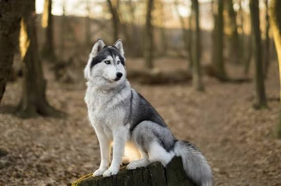
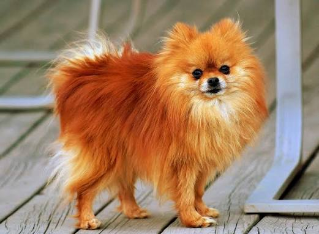
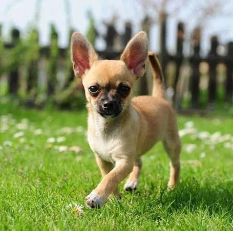

Siberian husky

Golden Retriever berasal dari Skotlandia. Anjing ini memiliki bulu panjang berwarna emas, tubuh berukuran sedang hingga besar, serta telinga yang terkulai. Sifatnya ramah, penyayang, cerdas, dan mudah dilatih. Golden Retriever sering dijadikan anjing pendamping dan anjing penolong.
German shepherd

German Shepherd berasal dari Jerman. Anjing ini memiliki tubuh kuat, telinga tegak, dan bulu berwarna hitam kecokelatan. Sifatnya cerdas, setia, berani, dan mudah dilatih. Anjing ini sering digunakan oleh kepolisian untuk membantu tugas penjagaan dan pencarian.
Pomeranian

Pomeranian berasal dari wilayah Pomerania di Eropa Tengah. Anjing ini memiliki tubuh kecil, bulu sangat lebat, telinga tegak, dan ekor mengembang. Sifatnya ceria, aktif, percaya diri, dan waspada. Pomeranian banyak dipelihara sebagai anjing rumahan.
Chihuahua

Chihuahua adalah salah satu ras anjing terkecil di dunia yang berasal dari Meksiko. Anjing ini terkenal karena tubuhnya mungil, telinga besar, dan sifatnya yang berani.
Golden retriever

Patung Liberty merupakan salah satu monumen paling terkenal di Amerika Serikat yang terletak di Pulau Liberty, New York. Patung ini diberikan oleh Prancis kepada Amerika Serikat sebagai simbol persahabatan kedua negara. Patung Liberty diresmikan pada tanggal 28 Oktober 1886. Monumen ini menggambarkan seorang perempuan yang mengenakan mahkota dengan tujuh sinar. Di tangan kanannya terdapat obor yang melambangkan kebebasan dan pencerahan. Sementara itu, tangan kirinya memegang sebuah lempengan bertuliskan tanggal kemerdekaan Amerika Serikat. Patung ini dirancang oleh pematung Prancis bernama Frédéric Auguste Bartholdi. Tinggi patung dari dasar hingga ujung obor sekitar 93 meter termasuk bagian alasnya. Patung Liberty menjadi simbol kebebasan, demokrasi, dan harapan bagi banyak orang. Hingga saat ini, patung tersebut menjadi salah satu destinasi wisata terkenal di dunia.